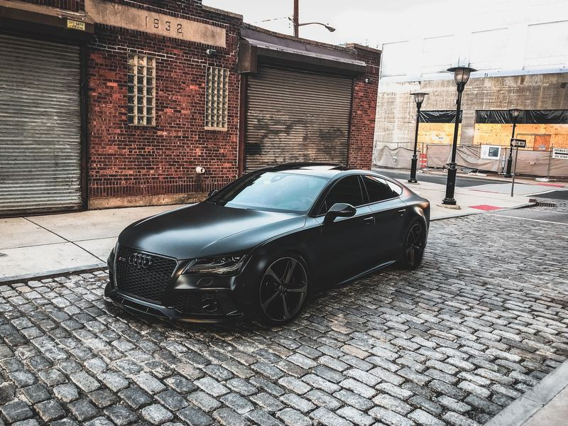
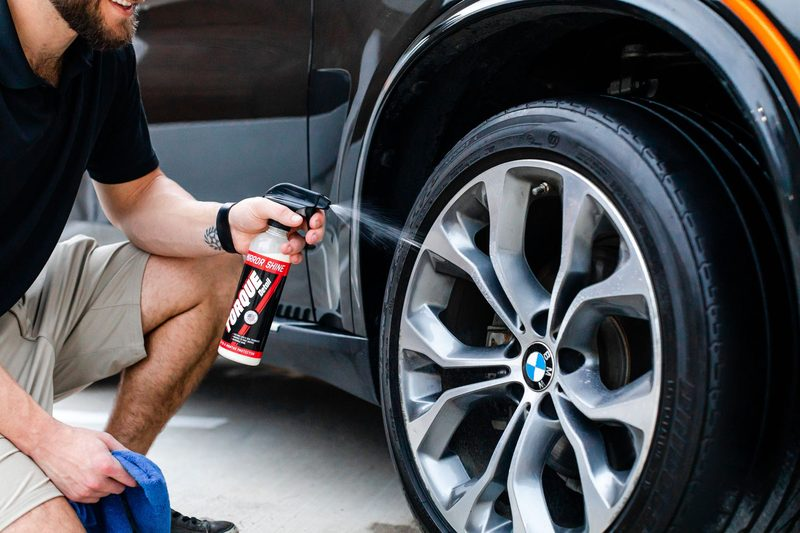

Inspect, then agree.
The paint is looked at in good light, the package is confirmed in writing, and the work does not start until that is clear. On a live site this is also where a deposit would be taken.

Process
One car at a time. The steps below describe how a commissioned workshop site could tell that story. They are not a booking, and they do not describe a real day of work.
The paint is looked at in good light, the package is confirmed in writing, and the work does not start until that is clear. On a live site this is also where a deposit would be taken.

A careful hand wash, then clay and chemistry as the package requires, so the polish is not working over grit.

Machine work follows the agreement: a single stage, or several, until the finish matches what was written down — not a promise of a measured result on this page.

A sealant or a ceramic coating, as agreed, and an interior that has been gone through. The car leaves when the work is finished, not when a slot runs out.
